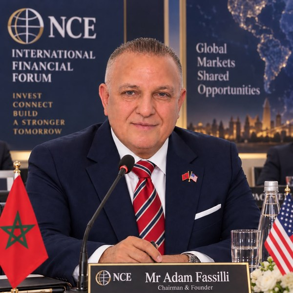
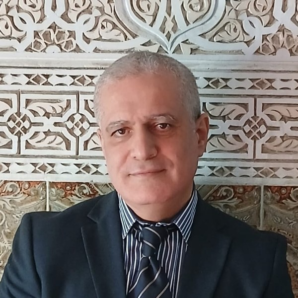
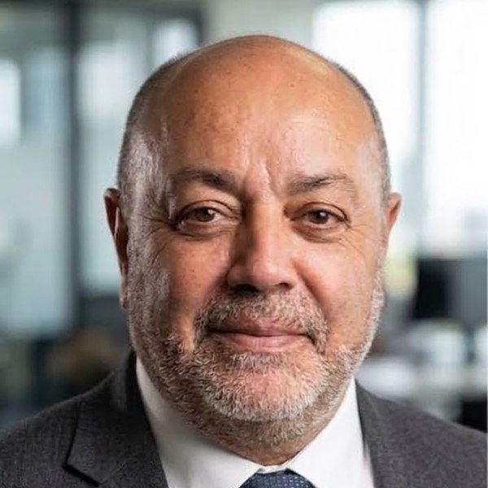

Équipe
Bureau Dirigeant & Membres du Conseil
GEOM est administré par un Bureau Dirigeant restreint et s'appuie sur des Membres du Conseil, experts indépendants qui valident les orientations de recherche et les publications. Le détail de la gouvernance élargie (Assemblée Générale, collèges sectoriels) est décrit sur la page Missions & structure.
Bureau Dirigeant

Adam FASSIL
Président FondateurResponsable de la direction morale et administrative du Groupement.

Youssef BRIGA
Vice-PrésidentResponsable de la direction scientifique et stratégique du Groupement.

Yassine KNOUZI
Secrétaire GénéralResponsable des relations publiques et de la coordination des composantes du Groupement.
Bureau Dirigeant
Organe exécutif
Assure la direction morale, administrative et financière du groupement entre deux Assemblées Générales.
M1
Membre du Conseil
Poste à pourvoirM2
Membre du Conseil
Poste à pourvoirM3
Membre du Conseil
Poste à pourvoirM4
Membre du Conseil
Poste à pourvoirM5
Membre du Conseil
Poste à pourvoir
Vous êtes opérateur économique, chercheur ou expert ? GEOM accueille de nouveaux membres opérateurs (par collège), membres actifs et Membres du Conseil. L'adhésion est gratuite — voir la page Adhésion.